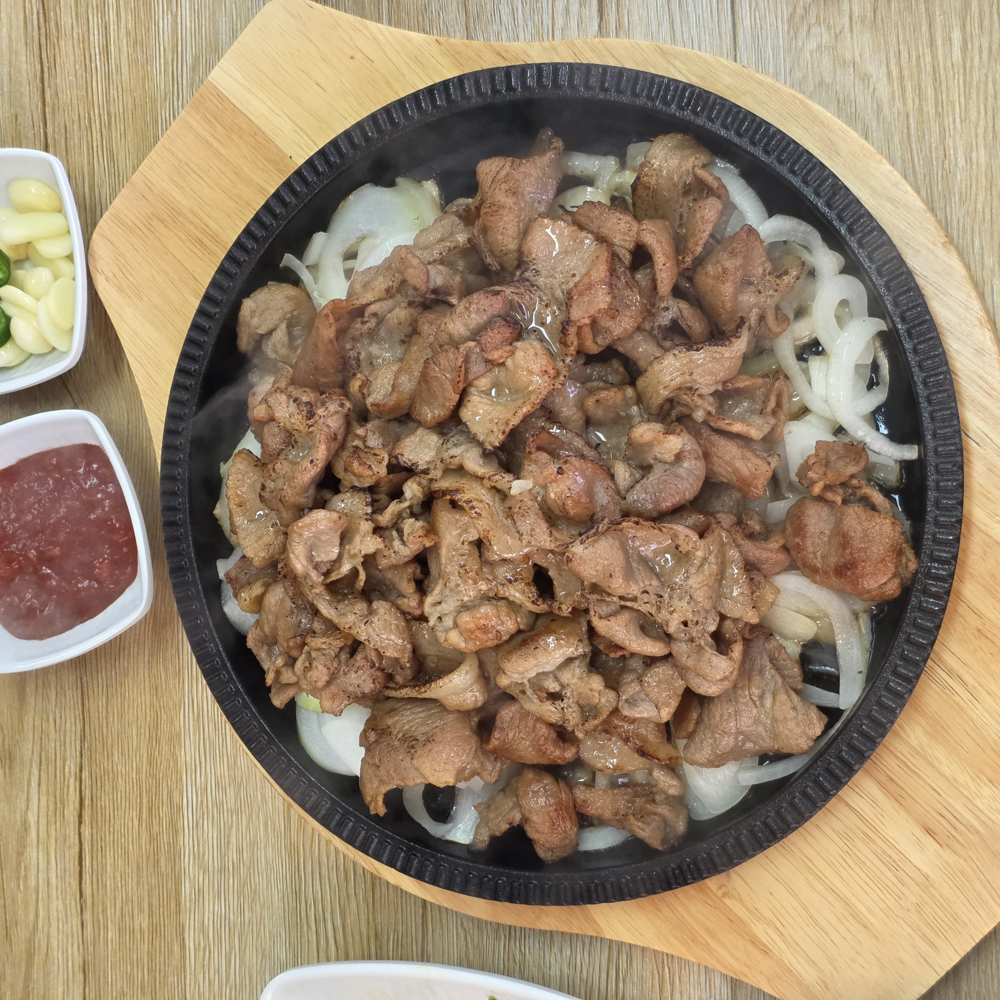
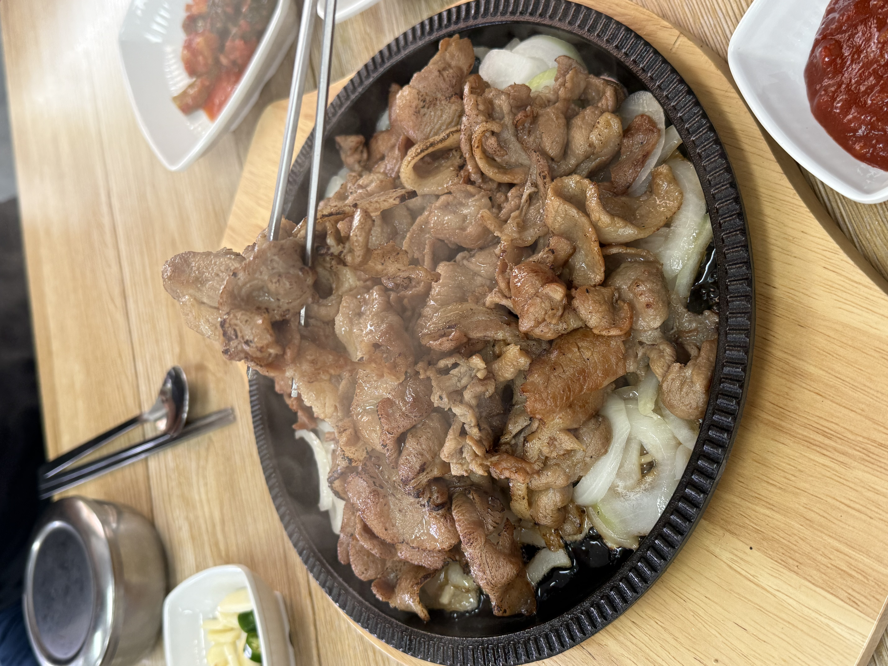
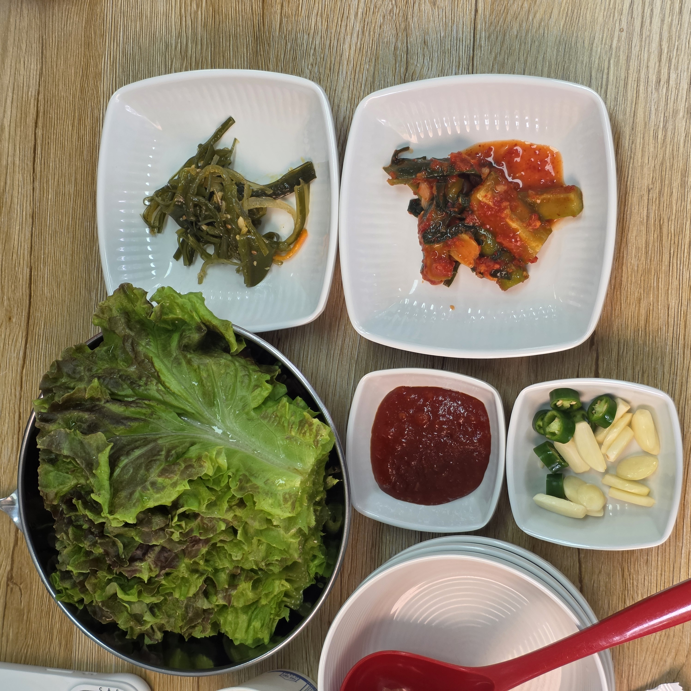
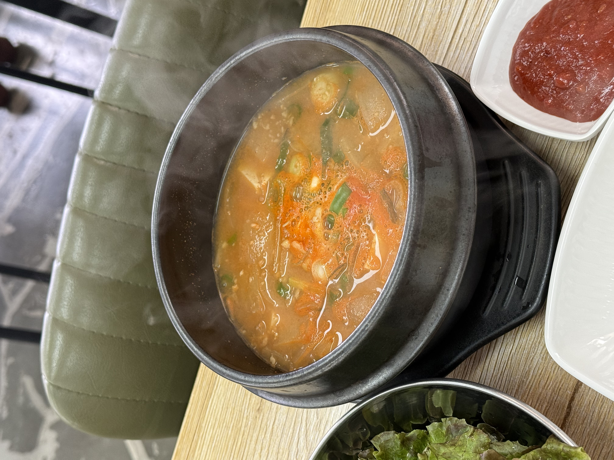

도로변에 자리한 대흥연탄불고기 – 간판에 포장·예약 문의 031-981-1718이 큼직하다
요즘 고기 한번 먹으러 나가려면 지갑부터 걱정되죠. 삼겹살 1인분이 2만 원을 넘나드는 시대에, 김포에서 부담 없이 배불리 먹을 집을 찾다가 대흥연탄불고기에 다녀왔습니다. 이름 그대로 연탄에 초벌해 불향을 입힌 돼지불고기를 파는 집인데, 1인분이 11,000원이고 여기에 된장찌개와 공기밥, 쌈, 밑반찬까지 딸려 나오니 한 끼가 그야말로 든든했어요. 직접 먹어본 그대로, 위치와 주차부터 메뉴 고르는 법·맛·상차림·솔직한 단점까지 처음 가는 분이 궁금할 만한 걸 정리해 두었습니다. 김포 쪽에서 가성비 좋은 고깃집을 찾고 있다면 이 글 하나로 판단이 서도록 써 볼게요.
대흥연탄불고기는 화려한 프랜차이즈가 아니라 김포 도로변에 자리한 동네 연탄불고기집입니다. 근처에 부대가 많은 동네라 군인 손님이 유독 자주 보였고, 거기에 가족 단위 손님과 퇴근길 직장인까지 두루 섞여 있어 '동네 사람들이 꾸준히 찾는 밥집'이라는 인상이 강했어요. 통유리 창에 대표 메뉴 사진이 큼직하게 붙어 있어서, 처음 가도 뭘 파는 집인지 헷갈릴 일이 없습니다.
간판에는 상호와 함께 포장판매·예약 문의 번호(031-981-1718)가 크게 적혀 있습니다. 실제로 포장해 가는 손님도 눈에 띄었는데, 집에서 연탄불고기에 밥 한 끼 하려는 분들이 꽤 있는 듯했어요. 과하게 꾸미지 않은 편안한 분위기라, 차려입고 가는 자리라기보다 '오늘 저녁 뭐 먹지' 싶을 때 부담 없이 들르는 집에 가깝습니다.
차를 끌고 갈 계획이라면 이 점이 반가울 텐데, 매장 앞과 옆으로 주차 공간이 있어 차로 가기에 편했습니다. 상가 밀집 골목이 아니라 도로변 단독 매장 느낌이라, 주차 때문에 크게 스트레스받지는 않았어요. 차로 이동이 많은 김포 외곽 특성상, 주차가 된다는 것만으로도 방문 문턱이 한결 낮아집니다. 다만 식사 시간대에 자리가 몰리면 주차도 붐빌 수 있으니, 시간은 넉넉히 잡고 가시는 걸 권합니다.
포장을 원한다면 간판에 안내된 031-981-1718로 미리 전화해 두면 편하고, 예약 문의도 같은 번호예요. 한 가지 미리 밝혀두면, 제가 방문했을 때 정확한 도로명 주소와 영업시간까지는 확인하지 못했습니다. 위치·영업시간·브레이크타임 여부는 방문 전에 전화로 한 번 확인하고 가시는 게 가장 안전합니다. 이 글에서는 확인되지 않은 정보는 지어내지 않고 '확인 권장'으로 남겨둘게요.
메뉴는 연탄불고기 계열이 중심입니다. 벽에 붙은 메뉴판을 기준으로 정리하면 아래와 같아요(가격은 방문 시점 기준이라 바뀔 수 있습니다).

| 연탄불고기 (200g / 초벌 무게) | 11,000원 |
| 고추장불고기 (225g) | 12,000원 |
| 연탄오리불고기 (반마리 / 한마리) | 38,000원 / 55,000원 |
| 공기밥 · 음료수 | 1,000원 · 2,000원 |
| 소주 · 맥주 · 막걸리 | 5,000원 · 5,000원 · 4,000원 |
간판 메뉴는 역시 연탄불고기(200g, 11,000원)입니다. 고기류는 기본적으로 2인분 이상 주문이라, 둘 이상 방문을 전제로 보면 됩니다. 저는 테이블마다 놓인 키오스크(테이블오더)로 시켰는데, 연탄불고기 2인 세트가 22,000원, 3인 세트가 33,000원으로 딱 떨어지게 구성돼 있어서 고민 없이 주문할 수 있었어요. 이 세트에는 된장찌개와 공기밥이 함께 나오기 때문에, 사실상 고기·국·밥이 한 번에 해결되는 구성입니다.

부위나 종류를 고를 때는 이렇게 잡으면 편해요. 기본이자 실패 없는 선택은 연탄불고기입니다. 좀 더 매콤한 걸 원하면 고추장불고기(225g, 12,000원)가 있고, 인원이 많거나 색다른 걸 먹고 싶다면 연탄오리불고기(반마리 38,000원·한마리 55,000원)도 선택지예요. 오리는 반마리·한마리 단위라 서너 명 이상 모임에 어울립니다. 술을 곁들인다면 소주·맥주 5,000원, 막걸리 4,000원이고 공기밥 추가는 1,000원이라, 어느 조합으로 시켜도 계산이 크게 부담스럽지 않았습니다. (참고로 저는 연탄불고기만 먹어봤고, 고추장불고기·오리불고기는 메뉴 구성 기준으로 안내하는 점 참고하세요.)
주문하고 얼마 지나지 않아 지글지글 김이 오르는 불고기 한 판이 나왔습니다. 연탄에 초벌로 구워 불향을 입힌 돼지고기를, 양파를 깐 무쇠판 위에 소복이 담아 내주는 방식이에요. 상 위에 올려주는 순간 고소한 연탄불 냄새가 확 올라와서 젓가락이 절로 바빠졌습니다. 이미 초벌이 되어 나오기 때문에 오래 구울 필요 없이, 무쇠판에서 양파와 함께 살짝 더 익혀 바로 먹으면 됩니다. 생고기를 처음부터 구워야 하는 집과 달리, 자리에 앉아 오래 기다리거나 굽는 데 신경 쓸 필요가 적다는 것도 이 방식의 장점이에요.


고기는 얇게 썬 편이라 굽는 시간이 짧고, 가장자리는 바삭하게 안쪽은 촉촉하게 씹혔어요. 두툼한 생삼겹살과는 결이 다른, 양념과 불향이 배어든 '불고기다운' 식감입니다. 밑에 깔린 양파가 고기 기름과 만나 단맛을 내면서 느끼함을 잡아주니, 고기와 양파를 같이 집어 먹는 걸 추천해요. 기름이 자르르 도는 상태일 때가 가장 맛있으니, 나오면 사진은 얼른 찍고 바로 드시는 게 좋습니다.


한 점 집어 먹어보면 연탄 불향이 확실히 진합니다. 그런데 양념이 과하게 짜거나 달지 않아서 물리지 않고 계속 들어가요. 연탄불고기가 자칫 양념 맛으로만 밀어붙이는 경우가 있는데, 여기는 불향과 간의 균형이 좋은 편이었습니다. 그래서 밥반찬으로도, 술안주로도 무난했어요.

가장 좋았던 조합은 역시 쌈입니다. 상추에 고기 한 점 올리고 마늘·풋고추에 쌈장을 조금 얹어 싸 먹으면, 짭조름한 고기와 아삭한 채소, 알싸한 마늘이 어우러져 한 입에 균형이 잡혀요. 여기에 밥 한 술 더하면 그야말로 밥도둑입니다. 고기만 먹다 물릴 즈음 쌈으로 넘어가면 입맛이 계속 살아나서, 2인 세트 한 판을 둘이서 금세 비웠습니다. 양이 아주 푸짐하게 넘치는 정도는 아니지만, 밑반찬과 된장찌개·공기밥이 함께 나오는 구성이라 한 끼로 배가 부족하다는 느낌은 들지 않았어요.

사실 이 집에서 제일 인상적이었던 건 곁들이의 알참이었어요. 다시마채무침·무생채·파무침·열무김치·오이무침 같은 밑반찬이 정갈하게 깔리고, 초장과 쌈장, 마늘·풋고추, 쌈 채소까지 넉넉하게 나옵니다. 반찬 하나하나가 자극적이지 않고 담백해서 고기 맛을 방해하지 않았고, 오히려 기름진 고기 사이에서 입을 개운하게 정리해 줬어요. 파무침이나 무생채는 고기 위에 얹어 같이 먹어도 잘 어울립니다.



세트로 주문하면 함께 나오는 된장찌개도 빼놓을 수 없습니다. 무와 두부, 파가 들어가 구수하면서도 칼칼한 국물이라, 고기 사이사이 한 술씩 떠먹으면 속이 든든해져요. 여기에 갓 지은 공기밥까지 더하면 고기 한 판이 그대로 백반 한 상이 됩니다. 고기 다 먹고 남은 양념에 밥을 비벼 된장찌개와 함께 마무리하면, 1인분 11,000원짜리 한 끼라는 게 믿기지 않을 만큼 알찼습니다.



먹는 내내 곁눈질로 봤는데, 근처에 부대가 많다 보니 군인 손님이 오면 사장님이 공기밥을 넉넉히 챙겨주시는 것 같더라고요. 크게 티 내는 건 아니지만, 한창 먹을 나이의 장병들에게 밥 한 공기 더 얹어주는 그 마음이 보기 좋았습니다.
요란한 이벤트나 화려한 인테리어는 없어도, 이런 동네 밥집 특유의 인심이 대흥연탄불고기의 또 다른 매력이 아닐까 싶었어요. 가격이나 맛만큼이나, 이런 소소한 인심이 동네 밥집을 다시 찾게 만드는 이유라는 걸 새삼 느꼈고, 단골이 왜 생기는지 알 것 같은 장면이었습니다.
추천하고 싶은 경우는 이렇습니다. 첫째, 김포 쪽에서 부담 없는 가격으로 배불리 고기를 먹고 싶을 때. 1인분 11,000원에 찌개·공기밥·밑반찬까지 포함이라 가성비가 확실합니다. 둘째, 가족이나 일행과 든든한 한 끼가 필요할 때. 세트 구성이 명확해서 인원수대로 시키면 되고, 주차도 되니 차로 오기 편해요. 셋째, 집에서 편하게 먹고 싶어 포장을 생각하는 분께도 맞습니다.
솔직하게 참고할 점도 남겨둘게요. 우선 고기류는 2인분 이상 주문이 기본이라 혼밥으로는 애매합니다. 돼지고기는 메뉴판에 수입산으로 표기돼 있으니, 국내산을 꼭 따지는 분이라면 참고하세요(대신 그만큼 가격이 착합니다). 얇게 썬 양념 불고기 스타일이라, 두툼한 생고기의 씹는 맛을 기대하면 결이 다를 수 있어요. 그리고 앞서 적었듯 정확한 영업시간·주소·웨이팅 여부는 제가 확인하지 못했으니, 식사 시간대를 피하고 싶거나 멀리서 찾아간다면 방문 전 전화로 확인하시길 권합니다. 소규모 매장 특성상 가격과 구성은 언제든 바뀔 수 있다는 점도 감안하시고요.
정리하면 대흥연탄불고기는 화려함보다 '가성비와 알찬 상차림'으로 만족을 주는 김포의 동네 고깃집이었습니다. 연탄 불향 진한 불고기에 된장찌개와 공기밥까지, 딱 기대한 만큼 든든한 한 끼였어요. 저처럼 가까운 데서 부담 없이 고기 한 끼 제대로 하고 싶은 분이라면 후회 없을 겁니다.
Q. 1인분도 주문되나요?
메뉴판 기준 고기류는 2인분 이상 주문이 기본입니다. 혼자보다는 둘 이상 방문을 추천해요.
Q. 세트에는 뭐가 포함되나요?
연탄불고기 2인 세트 22,000원, 3인 세트 33,000원이고, 각각 된장찌개와 공기밥이 함께 나옵니다. 공기밥 추가는 1,000원이에요.
Q. 주차 되나요?
매장 앞·옆으로 주차가 가능했습니다. 다만 식사 시간대엔 붐빌 수 있으니 시간을 넉넉히 잡으세요.
Q. 포장이나 예약도 되나요?
네, 간판에 포장판매·예약 문의(031-981-1718)가 안내돼 있습니다. 방문 전 전화로 확인하면 편해요.
Q. 돼지고기 원산지는 어디인가요?
메뉴판 표기 기준 돼지고기는 수입산, 오리는 국내산, 쌀·쌀김치는 국내산입니다.
| 상호 | 대흥연탄불고기 (연탄불고기 전문) |
| 문의·포장·예약 | 031-981-1718 |
| 대표 메뉴 | 연탄불고기 11,000원(200g) · 고추장불고기 12,000원 · 연탄오리불고기 38,000/55,000원 · 2인 세트 22,000원(된장찌개·공기밥 포함) |
| 원산지 | 돼지고기 수입산 · 오리 국내산 · 쌀·쌀김치 국내산 (메뉴판 표기 기준) |
| 편의 | 주차 가능 · 포장 가능 · 테이블오더(키오스크) 주문 |
| 위치·영업시간 | 김포 (부대 인접 도로변) · 정확한 주소·영업시간은 방문 전 전화 확인 권장 |